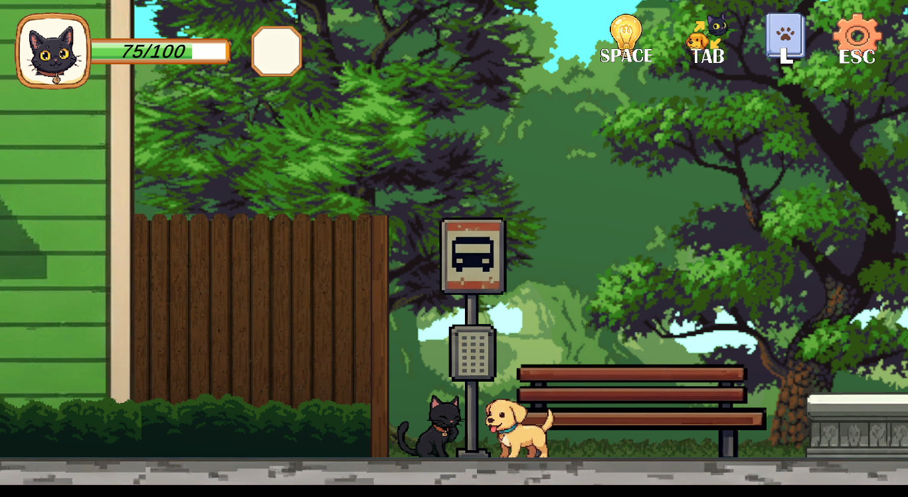
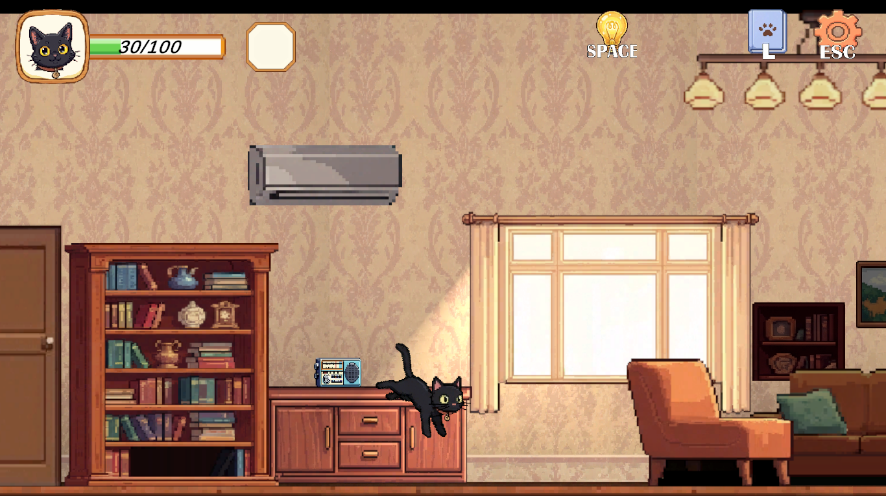
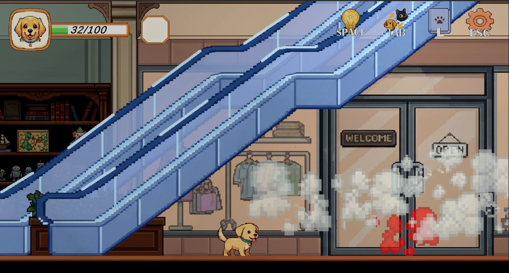
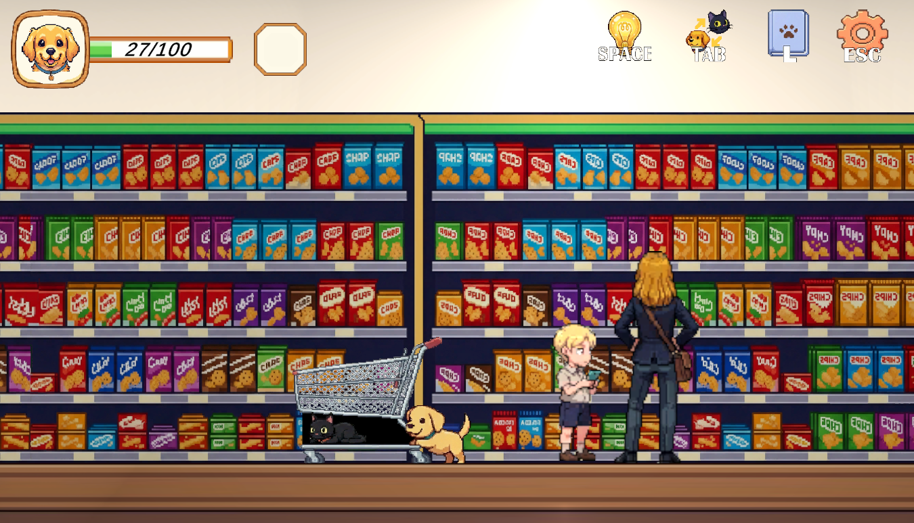
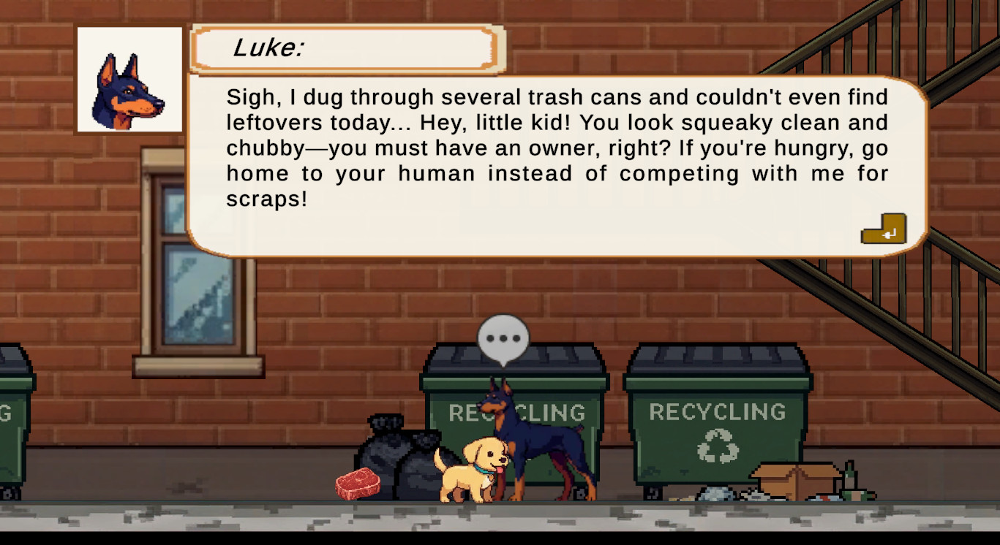
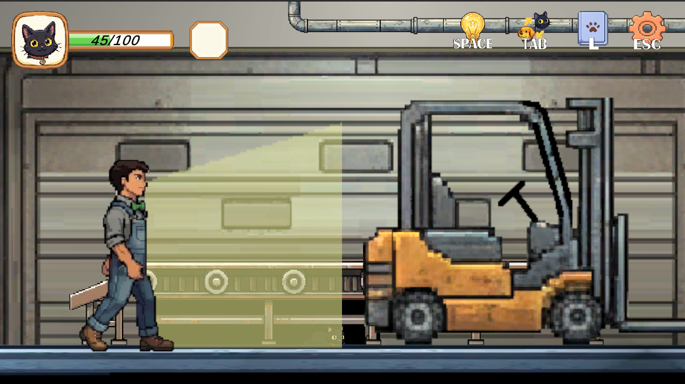
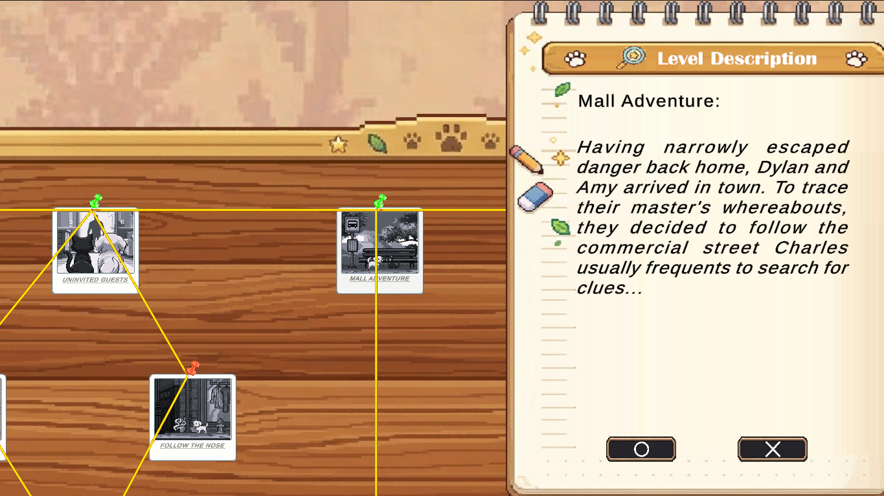
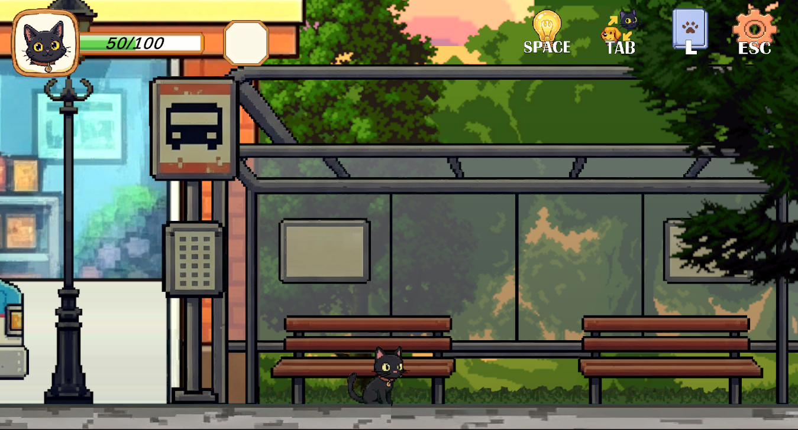
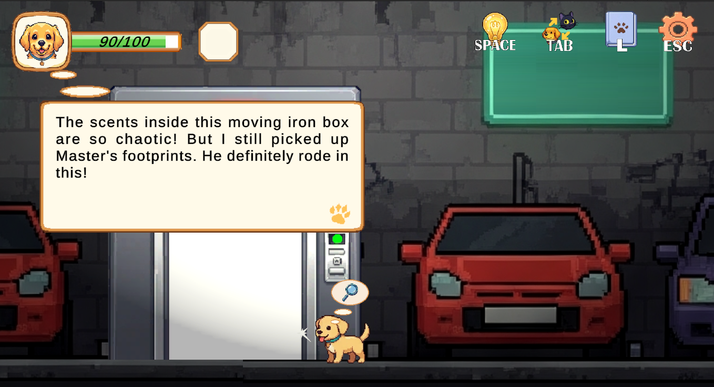

When Indie Dev Meets AI: A Year of Crafting vs. Generating a World in One Sentence?
Scrolling through the internet lately, I keep running into videos and screenshots of games made entirely with AI.
Watching someone type a few prompts, upload a reference image, and conjure up a playable mini-game in just a few minutes leaves me with mixed feelings.
On one hand, I can’t help but marvel at how fast modern tools are evolving. On the other hand, looking down at my own first indie game—a project I’ve been painstakingly polishing on and off for a year and am about to launch on Steam—I couldn't help feeling a brief wave of self-doubt.
I learned the engine from scratch, wrote every script, tweaked pixel art, and built 3D models step by step, while others seemingly hit "Enter" and called it a day.
That said, I’m certainly not someone who shuts the door on new technology. Since AI went mainstream, I’ve used it quite a bit in my daily development, though my approach is fairly pragmatic: I treat it more like an on-call technical consultant to help untangle error logs, optimize C# scripts,
or brainstorm solutions when I hit a wall in the engine.
Taking a step back, how far can AI really go in game development? The consensus is actually quite clear: "prompt-to-game" tools can generate a playable prototype in minutes, but shipping a polished, release-ready game with great game feel and cohesive art still requires human direction.
If we categorize current AI game development workflows, they roughly split into two distinct paths:
Path 1: AI-First Generation — Turning a Single Sentence into a Game (Best for Rapid Prototyping)
This approach focuses on "prompt-to-game" platforms, with Rosebud being a prime example (alongside similar tools like Websim).
The workflow is remarkably intuitive and requires zero coding knowledge. You simply describe your gameplay, camera perspective,
win/loss conditions, and art style in a sentence or two right inside your browser.
Behind the scenes, the platform translates your ideas into code (such as JavaScript and Three.js for 3D)
while simultaneously generating matching 2D/3D assets and audio. Within minutes, you have a live,
playable web game. Need a tweak? Just ask in the chat—"increase health" or "make the enemies slower"—and once you're happy,
you can share a playable link with friends.
My Take: Tools like this are fantastic for brainstorming, validating whether a core mechanic is actually fun, or whipping up a quick gift for friends.
However, they essentially operate as a "black box"—visual fidelity has its limits, complex system architectures are hard to pull off, and exporting them into a scalable,
long-term commercial project remains difficult.
Path 2: Traditional Development with AI as a "Super Tool"
For developers like me who prefer keeping full control over their projects, I still prefer building the game step-by-step inside a traditional engine, integrating AI deeply into the workflow as a "co-pilot."
Beyond coding agents like Codex that can write logic and run tests directly inside a code repository, what excites me most is Unity AI—a suite of tools built directly into Unity 6 and newer editors.
The biggest difference between Unity AI and a standard web chatbot is that it can actually see your entire project. Normally, pasting a script into a general LLM is like the blind men feeling an elephant, because behavior in Unity relies heavily on attached components and serialized Inspector values.
Unity AI connects directly to your scene hierarchy, asset library, and Inspector data:
• Coding & Debugging: You can ask the Assistant right inside the editor to fix console errors, create and wire up GameObjects, or even write a few custom editor tools to speed up your workflow.
• Rapid Prototyping: Its built-in generators let you whip up placeholder sprites, textures, audio, or simple 3D prefabs directly in the editor. When blocking out levels to test gameplay feel, you no longer have to stall while waiting for final art—just use placeholders first and swap them out later (plus, Unity automatically tags generated assets with metadata, making them easy to audit and replace before launch).
• Open Ecosystem: If you're already comfortable with Claude or Gemini, you can plug them in via interfaces to share the same deep project context without abandoning your favorite tools.
The Upsides of AI in Game Dev—And the Pitfalls to Watch Out For
Now that we’ve looked at the tools, I want to wrap up with a quick breakdown of the core advantages and potential pitfalls of bringing AI into game development, based on my own experiments and observations. Consider this a personal dev log—and a friendly heads-up for fellow indie creators. Why is mastering AI tools becoming increasingly important for game dev? Because of several undeniable advantages:
• Unmatched Prototyping Speed: Testing a raw idea in just one sentence. In the past, testing a new concept meant setting up frameworks and hunting for assets, often taking a week or two just to get a rough prototype. With AI, you can spin up something playable in minutes. This lets you validate whether a core mechanic is actually fun before sinking serious time and energy into art and engineering.
• Closed-Loop Testing and Debugging: Modern AI tools do much more than just autocomplete a few lines of code—they can understand project structures, run the game, read real error logs, and even playtest to tweak values. For a solo dev, it feels like having a tireless QA tester and junior programmer on board, taking a huge mental load off hunting down trivial bugs. Knowing this, my next personal project will definitely have one more assistant on board!
• Industry Normalization: Games carrying AI disclosure tags on Steam have become a common sight; AI-assisted development is simply part of the modern workflow now. According to one developer's tracking of roughly 53,600 Steam games, 30.8% of new releases in 2026 carried AI disclosure tags by mid-July (Games.gg); another tracker put that figure at 49.9% for October 2026 releases (FinalBoss). While the two datasets use different methodologies and shouldn't be compared one-to-one, the upward trend is undeniable (though this percentage alone doesn't measure how much AI content players actually encounter in-game).
Limitations & Pitfalls (Proceed with Caution)
• Quality Ceilings and "Maintenance Debt": Prompt-to-game platforms can reliably produce small 2D or web games, but they are still far from delivering commercial-grade 3D titles. Even when coding agents handle the core logic, cohesive art and audio still require a human touch. More importantly, beware of "maintenance debt"—if AI writes complex code that you don't actually understand, fixing bugs or adding new features later on will turn into an absolute nightmare.
• Platform Lock-in and Security Blind Spots: Many web-based, one-click game generators host projects on their own servers, restricting exports or tucking broad content licenses into their terms of service—always read the fine print before going commercial.
• Copyright Gray Areas & Steam’s Red Lines: Most major jurisdictions currently hold that purely AI-generated content isn't eligible for copyright protection. In short, if your entire game is generated from prompts, you’ll have little legal standing if someone clones it—and conversely, AI makes it dangerously easy to accidentally infringe on existing styles or characters. On the publishing front, Steam’s policy is very clear: behind-the-scenes productivity tools (like coding assistants) don't need to be disclosed, but any player-facing AI content (art, audio, narrative, etc.) must be declared. If your game uses real-time generative AI for live dialogue or images, you must also build strict content-filtering "guardrails." Remember, disclosing AI usage doesn't grant immunity from copyright claims—if your assets look too close to an existing title, you still risk getting pulled from the store.
2026-10-28
My personal website is officially live!
Talk about a long-overdue milestone! I actually learned HTML and CSS two years ago,
but between balancing my university studies and diving deep into game development,
the plan to build a website ended up on the back burner...
Until about a month ago, when I decided to brush up on my frontend skills and level up with new backend stack like SQL and MySQL!
I’ve always believed that the best way to learn is by building things. Reading tutorials is one thing, but actually putting theory into code is where the real magic happens.
Unsurprisingly, "easier said than done" hit me pretty hard, and I bumped into plenty of roadblocks along the way. But after two or three weeks of coding and debugging, the initial version of my site is finally live and fully functional!
This is just Version 1.0, though.
I’ll definitely keep refining it—adding cool new features, redesigning the visual style,
and making it even better. Alongside Instagram and X, this space will be my dedicated hub for sharing game dev insights and revealing upcoming game projects.
It was supposed to be a regular afternoon, but Charles hadn't returned home since he went out shopping yesterday. His two pets, Dylan the cat and Amy the dog, were beginning to search of their owner...
Step into the boots of a curious and agile archaeologist, on a thrilling treasure-hunting expedition across breathtaking worlds! Sprint, leap, and climb your way through trap-filled ancient ruins, sun-drenched lost islands, and floating sanctuaries high above the clouds. Master dynamic 3D platforming challenges, solve ancient puzzles, and collect long-lost relics to uncover the secrets buried at the edge of history!
Adventures of Paw - A 2D adventure to find their missing owner
1. Story Background
Their owner, Charles, hasn't returned home all day—and to make matters worse,
a group of mysterious intruders breaks into the house, seemingly searching for a secret.
Determined to find their missing owner, Dylan the cat and Amy the dog team up for a grand rescue mission.
From suburban villas and bustling shopping malls to the wilderness and industrial factories, this unlikely duo sets off on an unforgettable adventure through the human world.
2. Gameplay & Art Style
• 2D Pixel-Cartoon Style: The game adopts a 2D, side-scrolling, cartoon-style aesthetic that is a perfect fit for this adorable duo and the world they inhabit.
• Real-Time Dual Protagonists: Switch seamlessly between Dylan and Amy at any moment to tackle obstacles, utilize unique abilities,
and solve puzzles from two distinct perspectives.

3. Character Abilities
• Dylan (The Cat): Agile and level-headed. Excels at high jumps and stealthy hiding,
slipping through tight gaps and scaling elevated platforms—making him the ultimate specialist for infiltration and vertical exploration.

• Amy (The Dog): Kind-hearted with an extraordinary sense of smell.
Uses her signature "Scent Tracking" ability to follow trails left by Charles and strangers, uncovering key clues and hidden items.
She is also strong enough to push boxes and clear blocked paths.

4. Stamina Mechanics
• Stamina Consumption: Performing actions like Dylan's leaps or Amy's box-pushing—as well as getting spotted by human NPCs—drains stamina.

• Food & Animal Bartering: Scavenge dropped food and pet treats across levels to restore stamina, or share snacks with stray animals in exchange for valuable tips and assistance.

• Failure Branches: Getting caught by an NPC or being spotted with zero stamina forcefully ends the current mission, branching the narrative into entirely different follow-up levels.

5. Level Design & Branching Narrative
• Branching Storylines: Key levels feature pivotal story nodes where your choices—and whether you succeed or fail a mission—unlock completely different narrative paths.

• Day/Night Cycles & Dynamic Maps: Explore apartment complexes, malls, office buildings, factories, harbors, and train stations across day and night. Depending on your story route, the same overarching map reveals different scenes, dialogues, and puzzles.

• Environmental Storytelling & Deduction: Clues are woven into NPC conversations and character monologues. Experience the journey from multiple angles as you piece together the truth behind Charles's disappearance.

About Me
Hey, I'm Stephen, but you can call me Tang. Welcome to my personal website!
I'm a Otaku with double Bachelor's degrees in engineering mechanics and Computer Science.
As an avid gamer turned developer, this is my little corner of the web where I document my game development journey and share my Indie-projects.
Skill： C#, Unity, HTML/CSS, Unreal Engine, Blender 3D